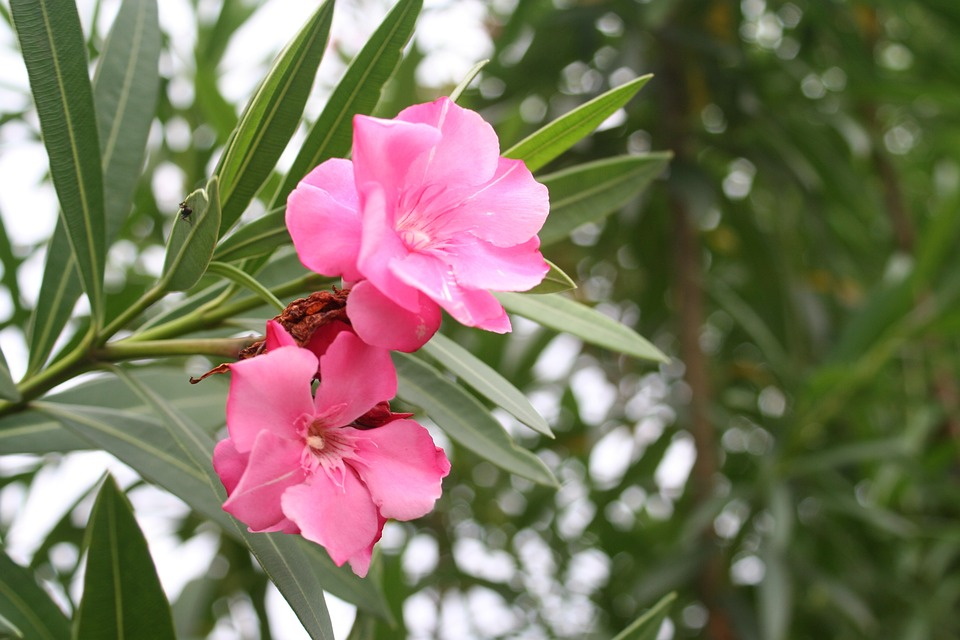

🌸 कण्हेर
English Name : Oleander
Scientific Name : Nerium oleander

संक्षिप्त परिचय
कण्हेर (Nerium oleander) हे Apocynaceae कुलातील एक सदाहरित व शोभेचे झुडूप आहे. ही वनस्पती प्रामुख्याने झुडूप स्वरूपाची असून कधी कधी लहान झाडाच्या आकारातही वाढते. कण्हेरचे मूळ स्थान भूमध्य सागर परिसर, उत्तर आफ्रिका आणि दक्षिण-पश्चिम आशिया मानले जाते. आज ही वनस्पती जगभरातील उष्ण व उपोष्ण प्रदेशांमध्ये मोठ्या प्रमाणावर आढळते. भारतामध्ये कण्हेर रस्त्यांच्या दुतर्फा, उद्याने, शाळा, महाविद्यालये व सार्वजनिक ठिकाणी लावली जाते. ही वनस्पती उष्ण हवामानात सहज वाढते. कमी पाणी उपलब्ध असतानाही कण्हेर चांगली वाढू शकते. त्यामुळे दुष्काळी किंवा अर्धकोरड्या भागातही ती उपयुक्त ठरते. कण्हेरची पाने लांबट, अरुंद व चकचकीत असतात. ही पाने बहुधा जोड्यांमध्ये किंवा वलयाकृती स्वरूपात उगवतात. खोड कापल्यास किंवा जखमी झाल्यास त्यातून दुधासारखा पांढरा रस बाहेर येतो. हा रस अत्यंत विषारी असतो. कण्हेरची फुले मोठी, सुंदर व आकर्षक असतात. ही फुले पांढऱ्या, गुलाबी, लाल, पिवळ्या किंवा जांभळट रंगांची असू शकतात. फुले बहुधा गुच्छांमध्ये उमलतात. उन्हाळा व वसंत ऋतूत कण्हेर अधिक प्रमाणात फुललेली दिसते. कण्हेरच्या सौंदर्यामुळे ती शोभेच्या वनस्पती म्हणून प्रसिद्ध आहे. जगभरातील बागकामामध्ये कण्हेरला विशेष महत्त्व दिले जाते. ही वनस्पती प्रदूषण सहन करण्याची क्षमता ठेवते. म्हणूनच शहरांमध्ये व औद्योगिक भागातही कण्हेर लावली जाते. कण्हेरचे आयुष्य तुलनेने जास्त असते. योग्य काळजी घेतल्यास ही वनस्पती अनेक वर्षे टिकते. कण्हेरच्या सर्व भागांमध्ये विषारी घटक असतात. पाने, फुले, खोड, बिया व मुळे सर्वच भाग विषारी आहेत. या वनस्पतीमध्ये कार्डियाक ग्लायकोसाइड्स नावाचे रसायन आढळते. हे रसायन हृदयावर परिणाम करू शकते. कण्हेरचे सेवन केल्यास गंभीर विषबाधा होऊ शकते. मानवांसोबतच प्राणी व पक्ष्यांसाठीही कण्हेर विषारी आहे. इतिहासात कण्हेरच्या विषामुळे अनेक अपघात घडल्याचे उल्लेख आढळतात. तरीसुद्धा योग्य प्रमाणात व वैद्यकीय मार्गदर्शनाखाली कण्हेरचा उपयोग पारंपरिक औषधांमध्ये केला गेला आहे. प्राचीन काळात काही संस्कृतींमध्ये कण्हेरचा उपयोग औषधी वनस्पती म्हणून केला जात होता. मात्र आधुनिक वैद्यकशास्त्रात कण्हेरचा थेट वापर टाळला जातो. कण्हेरची लागवड करणे तुलनेने सोपे आहे. ही वनस्पती कलमांद्वारे सहज वाढवता येते. कण्हेरला फारशी खतांची गरज नसते. साधारण जमिनीतही ती चांगली वाढते. सामाजिकदृष्ट्या कण्हेरला सौंदर्य व सहनशीलतेचे प्रतीक मानले जाते. कठीण परिस्थितीतही फुलणारी वनस्पती म्हणून ती मानवी जिद्दीचे प्रतीक ठरते. काही देशांमध्ये कण्हेरला स्मरणचिन्ह किंवा सजावटीच्या प्रतीकात्मक अर्थाने पाहिले जाते. भारतात धार्मिक स्थळांच्या परिसरात कण्हेर लावलेली दिसते. कण्हेरच्या फुलांचा उपयोग फुलसजावटीसाठी केला जातो. तथापि धार्मिक वापर करताना विषारी गुणधर्म लक्षात घेणे आवश्यक असते. साहित्य व काव्यामध्ये कण्हेरच्या सौंदर्याचा उल्लेख आढळतो. काही लोककथांमध्ये कण्हेरचा उल्लेख सुंदर पण धोकादायक वनस्पती म्हणून केला जातो. आज कण्हेर ही प्रामुख्याने शोभेची व पर्यावरणपूरक वनस्पती म्हणून ओळखली जाते. योग्य जागी व योग्य काळजीसह लावल्यास कण्हेर पर्यावरण व सौंदर्य दोन्ही वाढवते.
वनस्पतीशास्त्रीय माहिती
🌿 कुल
Apocynaceae (अपोसिनिएसी)
🌱 रचना
पाने लांबट व जाड, खोडातून दुधासारखा विषारी रस स्रवतो.
🌼 फुले
फुले मोठी, रंगीबेरंगी व समूहाने उमलणारी असतात.
🌍 अधिवास
उष्ण व कोरड्या प्रदेशात तसेच नदीकाठच्या भागात चांगली वाढते.
सामाजिक व सांस्कृतिक महत्त्व
कण्हेरला विविध संस्कृतींमध्ये सौंदर्य, सहनशीलता व टिकावाचे प्रतीक मानले जाते. प्राचीन काळापासून कण्हेरचा उपयोग उद्याने व सार्वजनिक जागांची शोभा वाढवण्यासाठी केला जात आहे. भारतात मंदिर परिसर, शाळा व रस्त्यांच्या दुतर्फा कण्हेर लावली जाते. कठीण हवामानातही टिकून राहण्याच्या क्षमतेमुळे ही वनस्पती मानवी जिद्द व सहनशक्तीचे प्रतीक मानली जाते. काही लोकसाहित्य व कथांमध्ये कण्हेरच्या सौंदर्याबरोबरच तिच्या विषारी स्वभावाचाही उल्लेख आढळतो.
काळजी व धोके
⚠️ विषारी वनस्पती
कण्हेरचे पाने, फुले व खोड सर्वच भाग विषारी असतात.
👶 सुरक्षितता
लहान मुले व जनावरे यांना कण्हेरपासून दूर ठेवावे.